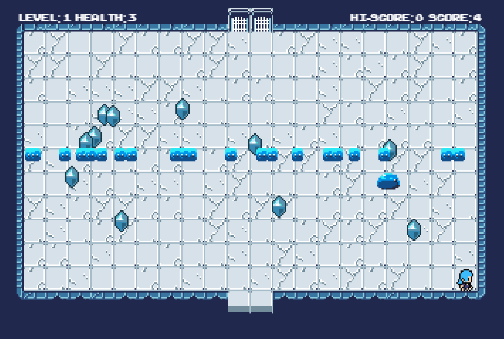

Mes Projets
WaveDodger

Mon premier jeu vidéo en C#. Évitez les vagues d'ennemis pendant qu'ils se déplacent vers le bas de l'écran, et ramassez les jetons pour compléter les niveaux.
Télécharger V1.12 (79MB)WaveDodger II

La suite amusante de l'original! Avec la placement aléatoire des ennemis, un éditeur de niveaux avec deux modes, et la documentation complète du code.
Dépot GitHubPoker Vidéo

Un petit jeu d'argent qui va sûrement causer un addiction au vrai jeu.
Télécharger V1.00 (803KB)TNNF
BudgetViewer

Un projet d'équipe pour App/Dev: Une application de plannification financière qui vous permet de gérer des catégories different des dépenses.
Dépot GitHubXvB_GUI [Avertissement de Dépréciation]

Une application multi-adresses pour Windows qui fournisse les statistiques sur le pool de minage de Monero XMRvsBEAST.
Dépot GitHubIU Alternative MoneroOcean

Une application personnalisable qui permet les mineurs de MoneroOcean de voir leur statistiques, rapports de transaction, blocs, et plus!
Aller à l'ApplicationHorloge Bitcoin

Une horloge Web qui montre le temps jusqu'au "halving" de Bitcoin, fait avec SevenSeg.js
Aller a l'ApplicationWaveDodger III: SlimeDodger
La troisième jeu dans la série WaveDodger, fait avec JavaScript. Développé par moi et overflow-gitch en utilisant des bibliothèques par VikramSinghMTL
JouerRestez à l'écoute pour autres projets!